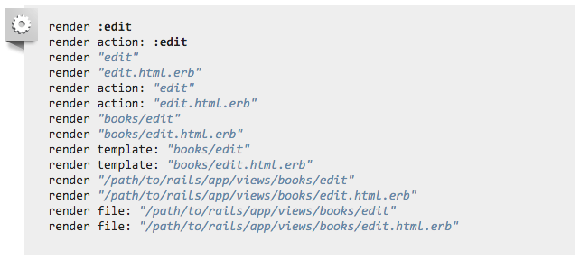
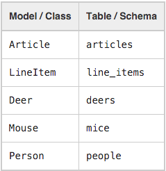
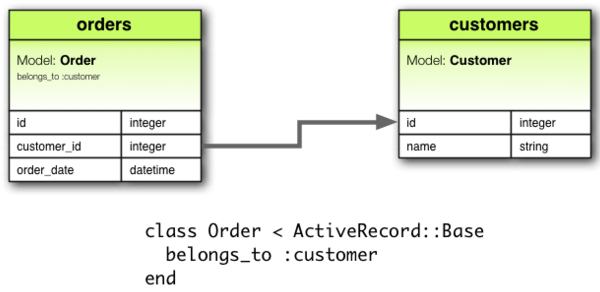
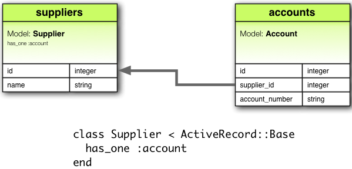
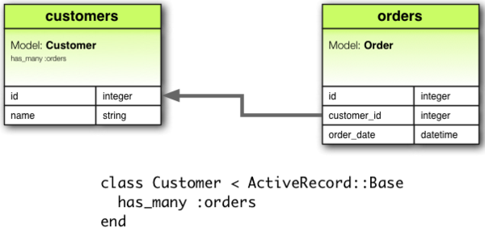
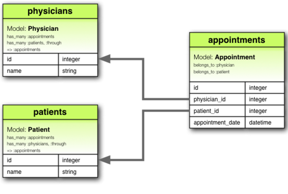
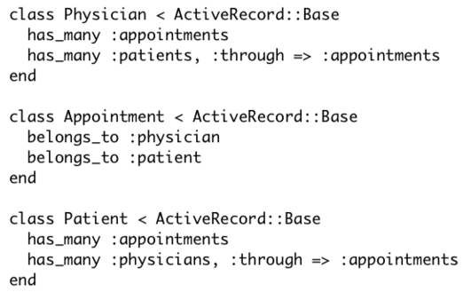
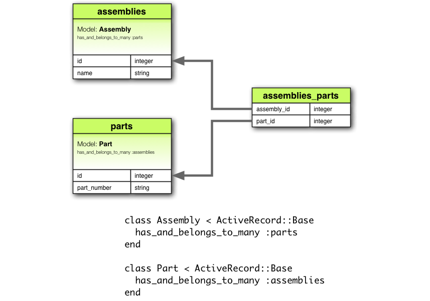

Web Hackathon Seminar
11
Ruby/Rails/MVC/Migration/Model/Association
Ruby

首先要先確認 Ruby 版本 > 2
ruby -v
可以用 irb 來練習 (Interactive Ruby)
可參考這裡
確認可以執行：
puts "Hello World"Ruby 是完全物件導向的語言
沒有 int, bool 之類的原始型別 (primitive types)
所有的實字 (literal) 都會被解析成對應的物件來使用
| String | '字串', "字串" |
| Symbol | :products |
| Integer | 1 |
| Float | 0.1 |
| Array | [1, 2, 3] |
| Hash | {:a => 1, :b => 2} |
| Range | 1..28 |
| Nil | nil |
| True | true |
| False | false |
可以用 .class 來檢查
Ruby 中只有 false 和 nil 是判斷為 false
一些 Ruby 語法
用 puts 來印出東西
puts "yo~~"
一般不打分號，block 用 end 結束
def index
# ... logic
end
「如果不」通常會用 unless
if !works
# ..logic
end
unless works
# ..logic
end
直到 xxx 通常會用 until
while !works do
# ..logic
end
until works do
# ..logic
end
簡單的式子會用 if , unless modifier
puts "yo" if true
puts "yo" unless false
最後一個結果會自動 return
def is_odd?(x)
x % 2 != 0
end
is_odd? 1
is_odd? 2
z = if x < y
true
else
false
end
symbol 是個 unique 的值
不需要用字串來代表 unique key
class MyClass
attr_accessor :instance_var
end
幾乎不會用到 for
用 times, each 等等
3.times do
puts 1
end
(1..10).each do |n|
puts n
end
[1, 2, 3, 4, 5].each do |n|
puts n
end
hash
跟 js 的 object 差不多
# key => value
h = {1 => [], :b => 2}
h[:b]
{:a => 1, :b => 2}
# 用 symbol 當 key 的可以簡寫成
{a: 1, b: 2}
case when
num = 543
case num
when 0..9
puts "1 digit."
when 10..99
puts "2 digits."
when 100...999
puts "3 digits."
else
puts "other.."
end
instance variable
class CatalogController < ApplicationController
def index
@x = 1
end
end
全部運算子都是 method
# 這個
1 + 2
# 等同於 ...
1.+(2)
# 也等同於:
1.send "+", 2
Rails

主要功能：
- Routing
- MVC
- Active Record
- Template and Layout
- Asset Pipeline
- Internationalization
- Mailer
- Job
- Command Line Tools & Rake Task
- Generator
- Migration
- ....
開新專案
rails new blog
# 預設是 sqlite 也可以改用 mysql
rails new blog -d mysql執行 server
rails server
# 或是用縮寫 s
# 會把 WEBrick server 執行在 localhost 3000 port
rails s
| app | 網站相關的 code，包含 MVC |
| bin | 可執行的指令腳本 |
| config | 設定檔 |
| db | schema, migration, seeds |
| lib | 可獨立於網站外的程式碼 |
| public | 公開資源 |
| test | 測試程式 |
| vender | 第三方程式碼 |
| Gemfile | 依賴套件設定 |
| Gemfile.lock | 鎖 Gem 版本讓每個人裝到一樣的 |
| Rakefile | 載入 Rails 內建任務和 lib/tasks 的任務 |
Routing
看有哪些 routes
# 會列出所有 routes
rake routes設定檔放在 config/routes.rb
在 Rails.application.routes.draw 裡面做設定
詳細設定可參考
Index Route
把 / 指向 welcome controller 的 index method
Rails.application.routes.draw do
root 'welcome#index'
end
用 generator 產生 controller
// rails g controller (controller_name) [actions..]
rails g controller welcome index
// 相反地使用 rails d controller 可以把上面產生的都刪光
Resource routes
把資源的 CRUD 一起搞定
Rails.application.routes.draw do
resources :products
end
用 generator 產生 scaffold controller
rails g scaffold_controller productMVC
Model-View-Controller
MVC 是個年代悠久的模式
也衍伸出許多的變種：
MVP, MVVM, MVW...等等
現在 Web Server 的因為透過網路其實不是傳統的 MVC
而是一種叫作 Model2 的模式
不過一般直接都稱作 MVC
Router
HTTP Request 先經過 Router 找到對應的 Route
在發送到處理的 Controller Action
Controller
接收 Request Input，query, params, body 並發送給 Model
Model
核心商業邏輯
包括 Database Model 跟其他各種 Service
處理完送回 Controller
View
Model 處理完的資料送進來產生 View
網頁的話通常是產生 HTML
再透過 Controller Response 回去 Client
Controller
params
# params 是一個 HashWithIndifferentAccess 物件
# 所以 hash[:foo] 跟 hash["foo"] 在這邊是一樣的
# query, body, path_parameters 都會進到 params 裡面
class CatalogController < ApplicationController
def purchase
@id = params[:id]
end
end
render
回傳純文字
class CatalogController < ApplicationController
def index
render plain: "OK", status: :ok
end
end
回傳 HTML
class CatalogController < ApplicationController
def index
# 為了安全必須跳脫特殊字元
render html: "<strong>Not Found</strong>".html_safe, status: :not_found
end
end
回傳 JSON
class CatalogController < ApplicationController
def index
# 傳進去的東西會自動 call to_json
render json: @product, status: :ok
end
end
回傳 template
class CatalogController < ApplicationController
def index
# 屬於同一個 controller 的 view template
render :edit
end
end
# 或是
class CatalogController < ApplicationController
def index
# 可以 render 不同 controller 的 view template
render "books/edit"
end
end
這些都是一樣的效果...
Backend with Database
ActiveRecord as ORM
Object Relational Mapping
用於實現物件導向編程語言裡
不同類型系統的資料之間的轉換
Naming Convention
- Model 用 首字大寫的單數型態命名
- table 用 小寫 + 底線的多數型態命名
- 用一個 id 當作 Primary keys
- Foreign keys 用 table name + id，例如：user_id
Rails console
# 進入有載入 Rails 環境的 irb
rails console
或是
# 縮寫
rails c
首先要先確定
MySQL 有執行起來
Rails 支援的選擇 (提供 preconfiguration)：
找到資料庫設定檔：config/database.yml
設定 development、test、production 用資料庫
default: &default
adapter: mysql2
encoding: utf8
pool: 5
username: hello
password: hello
host: 127.0.0.1
development:
<<: *default
database: hello_dev
# Do not set this db to the same as development or production.
test:
<<: *default
database: hello_test
production:
<<: *default
database: hello_production
username: <%= ENV['PRODUCTION_DATABASE_USERNAME'] %>
password: <%= ENV['PRODUCTION_DATABASE_PASSWORD'] %>
環境變數
# 用 -e
rails s -e production
或是
# 用 RAILS_ENV
RAILS_ENV=production rails s
建出所有 database !
rake db:create:allMigration
在不同的時間、不同人、不同電腦間需要同步
SQL 寄來寄去的不是一個解決之道
rails g migration CreateUsers就會產生類似 20151209102010_create_users.rb
用日期來標記檔案的順序以及唯一性
class CreateUser < ActiveRecord::Migration
def change
create_table :users do |t|
end
end
end所有的 migration 都繼承自 ActiveRecord::Migration
並會在執行時呼叫 change 方法
def change
create_table :users do |t|
t.string :email, null: false
t.string :password, null: false
t.string :name
t.integer :age
t.timestamps null: false
end
end
建立 users 資料表、並放上 email, password, name, age, created_at, updated_at 等欄位
# 執行 migration
rake db:migrate
# 回朔 migration
rake db:rollback
# 查看狀態
rake db:migrate:status會在 db 建一個表來追蹤
| :integer | 整數 |
| :float | 浮點數 |
| :decimal | 十進位 |
| :boolean | 布林值 |
| :string | 有限長度變動字串 |
| :text | 不限長度變動字串 |
| :datetime | 日期時間 |
| :timestamp | 時間戳記 |
| :time | 時間 |
| :date | 日期 |
| :binary | 二進位 |
- 指定資料表後就可以藉由參數 t 來操作
- 用 t.xxx 來新增指定屬性的欄位
- null: false 可以讓欄位不能為空值
- 用 t.timestamps 會加上 created_at, updated_at
建立資料表
def change
create_table :users do |t|
t.string :email, null: false
t.string :password, null: false
t.string :name
t.integer :age
t.timestamps null: false
end
end
修改資料表
def change
change_table :users do |t|
t.string :first_name
t.string :last_name
end
end
資料表改名
def change
rename_table :users, :admins
end
刪除資料表
def change
drop_table :users
end
新增欄位
def change
add_column :users, :nick_name
end
修改欄位名稱
def change
rename_column :users, :nick_name, :other_name
end
變更欄位型別
def change
change_column :users, :nick_name, :text
end
移除欄位
def change
remove_column :users, :nick_name
end
加上索引
def change
add_index :user, :name
end
加上 unique 索引
def change
add_index :user, :name, unique: true
end
移除索引
def change
remove_index :users, :nick_name
end
加上外鍵
def change
add_foreign_key :users, :nick_name
end
移除外鍵
def change
remove_foreign_key :users, :nick_name
end
無法直接推出 rollback 的需要定義 up 和 down
例如：remove 類的
class DropUser < ActiveRecord::Migration
def up
drop_table :users
end
def down
create_table :users do |t|
t.xxx.....
t.yyy.....
....
end
end
end
Rake Task
rake db:create # 建立現在環境的 db
rake db:create:all # 建立全部環境的 db
rake db:drop # 刪除現在環境的 db
rake db:drop:all # 刪除全部環境的 db
rake db:migrate # 執行 migration
rake db:rollback # 回朔 migration
rake db:migrate:status # 查看 migration 狀態
rake db:seed ＃ 執行 seedingModel (Active Record)
產生 Model
rails g model User email:string password:string name:string因為這個也會產生 migration 所以建議直接用這個
會產生一個 app/models/user.rb
class User < ActiveRecord::Base
end繼承自 ActiveRecord::Base
查詢
all
# 取得全部 product
Product.all
find
# 用 id 找
product = Product.find 1
products = Product.find [1, 2, 3]
find_by_xxx
# 可以用欄位的特殊方法查詢
User.find_by_email 'test@gmail.com'
User.find_by_username 'example'
where
# 加上一個條件 hash
p = Product.where(name: 'Mac', x: 1)
# 在 Ruby 下面三個是一樣的
p = Product.where(:name => 'Mac', :x => 1)
p = Product.where(name: 'Mac', x: 1)
p = Product.where name: 'Mac', x: 1
select
# 選擇特定欄位
User.select('username, email')
# limit 限制筆數
User.limit 10
# order 設定排序
User.order('username')
# offset 忽略前幾筆
User.offset 100
# 可以串在一起
users = User.where('age >= ?', 18).order('username').offset(100).limit(10)
新增
new
# 失敗回傳 false
a = Product.new(:name => 'Windows')
a.save
# 失敗 raise error
b = Product.new(:name => 'Mac')
a.save!
create
# 失敗回傳 false
Product.create(:name => 'Windows')
# 失敗 raise error
Product.create!(:name => 'Mac')
等同 new 完接 save
first_or_initialize, first_or_create
# 取第一個，查不到就 new
Product.where(:name => 'Windows').first_or_initialize
# 取第一個，查不到就 create
Product.where(:name => 'Mac').first_or_create
修改
update
# attributes 是一個 hash
p = Product.first
p.update attributes
# 失敗會 raise error 的版本
p.update! attributes
刪除
delete (用 id)
Product.delete 2
Product.delete [1, 2, 3]
destroy (對物件)
first_product = Product.first
first_product.destroydestroy_all
Product.destroy_allAssociations
有時候不同的 Model 間會有關係
class Customer < ActiveRecord::Base
end
class Order < ActiveRecord::Base
end
刪除一個顧客時需要先把訂單刪光
@orders = Order.where(customer_id: @customer.id)
@orders.each do |order|
order.destroy
end
@customer.destroy
直接定義一個關聯，並宣告 dependent: :destroy
class Customer < ActiveRecord::Base
has_many :orders, dependent: :destroy
end
class Order < ActiveRecord::Base
belongs_to :customer
end
belongs_to
has_one
has_many
has_many through
has_many through
has_and_belongs_to_many
THE END
Thanks for listening